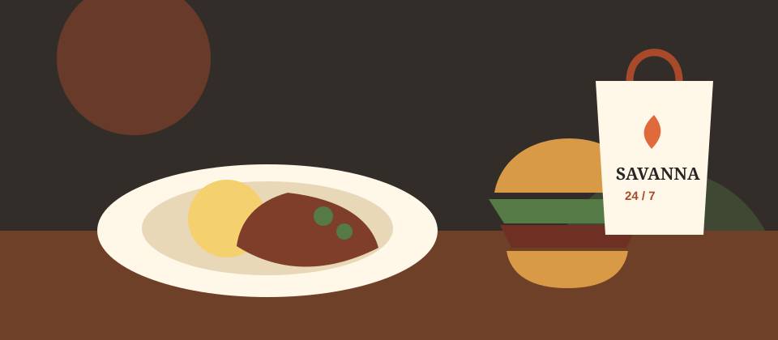

Local produce

We aim to purchase produce directly from farmers in and around Thohoyandou whenever suitable stock is available.

FreshBasket is a proposed community-owned grocery store in Thohoyandou. We plan to buy fresh stock from local farmers, employ local youth and make everyday food easier to access.
We aim to purchase produce directly from farmers in and around Thohoyandou whenever suitable stock is available.

Customers will earn coupons when buying selected products and redeem them on future purchases.
Community members will be able to hold shares in the proposed business, while local youth will receive preference for suitable employment opportunities.